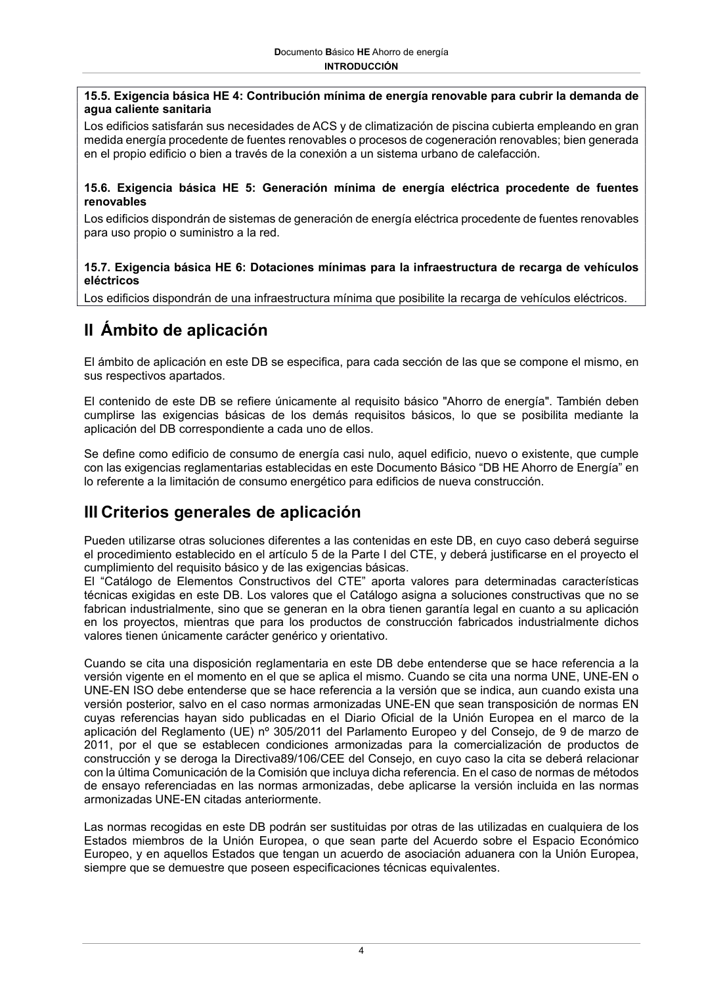
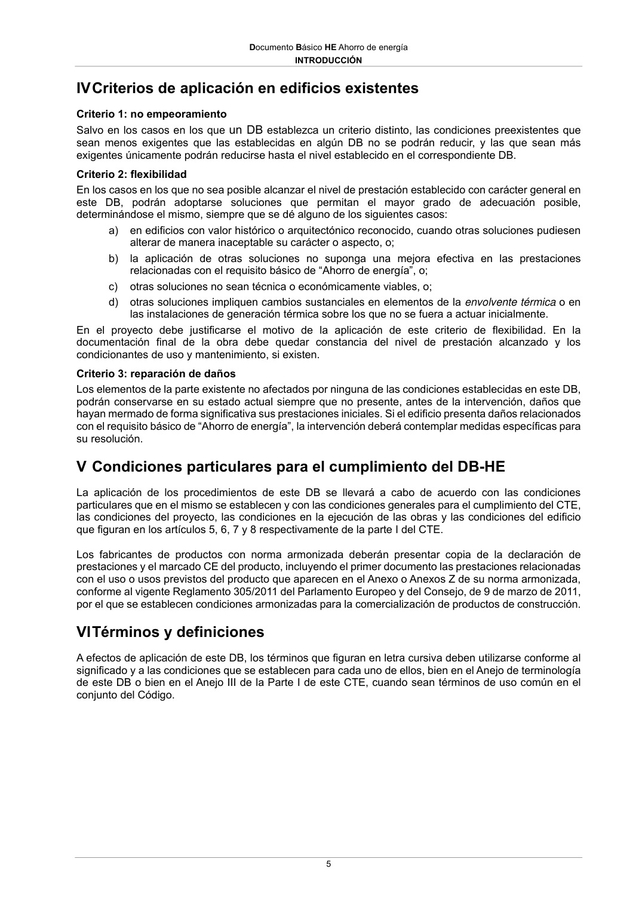

DB-HE Ahorro de energía · edición 2022-06-14 · capa oficial
Documento DB-HE-oficial · SHA-256 del PDF 7f890bd495552e979f83f72c5f5c7b642e745911a8e343a7b5b73023ce0e1f05
Copia fiel del PDF fuente · Fuente oficial
Ficha de la disposición en la fuente oficial
Formatos: JSON del segmento · Markdown
III Criterios generales de aplicación Pueden utilizarse otras soluciones diferentes a las contenidas en este DB, en cuyo caso deberá seguirse el procedimiento establecido en el artículo 5 de la Parte I del CTE, y deberá justificarse en el proyecto el cumplimiento del requisito básico y de las exigencias básicas. El “Catálogo de Elementos Constructivos del CTE” aporta valores para determinadas características técnicas exigidas en este DB. Los valores que el Catálogo asigna a soluciones constructivas que no se fabrican industrialmente, sino que se generan en la obra tienen garantía legal en cuanto a su aplicación en los proyectos, mientras que para los productos de construcción fabricados industrialmente dichos valores tienen únicamente carácter genérico y orientativo. Cuando se cita una disposición reglamentaria en este DB debe entenderse que se hace referencia a la versión vigente en el momento en el que se aplica el mismo. Cuando se cita una norma UNE, UNE-EN o UNE-EN ISO debe entenderse que se hace referencia a la versión que se indica, aun cuando exista una versión posterior, salvo en el caso normas armonizadas UNE-EN que sean transposición de normas EN cuyas referencias hayan sido publicadas en el Diario Oficial de la Unión Europea en el marco de la aplicación del Reglamento (UE) nº 305/2011 del Parlamento Europeo y del Consejo, de 9 de marzo de 2011, por el que se establecen condiciones armonizadas para la comercialización de productos de construcción y se deroga la Directiva89/106/CEE del Consejo, en cuyo caso la cita se deberá relacionar con la última Comunicación de la Comisión que incluya dicha referencia. En el caso de normas de métodos de ensayo referenciadas en las normas armonizadas, debe aplicarse la versión incluida en las normas armonizadas UNE-EN citadas anteriormente. Las normas recogidas en este DB podrán ser sustituidas por otras de las utilizadas en cualquiera de los Estados miembros de la Unión Europea, o que sean parte del Acuerdo sobre el Espacio Económico Europeo, y en aquellos Estados que tengan un acuerdo de asociación aduanera con la Unión Europea, siempre que se demuestre que poseen especificaciones técnicas equivalentes. Documento Básico HE Ahorro de energía INTRODUCCIÓN 5

